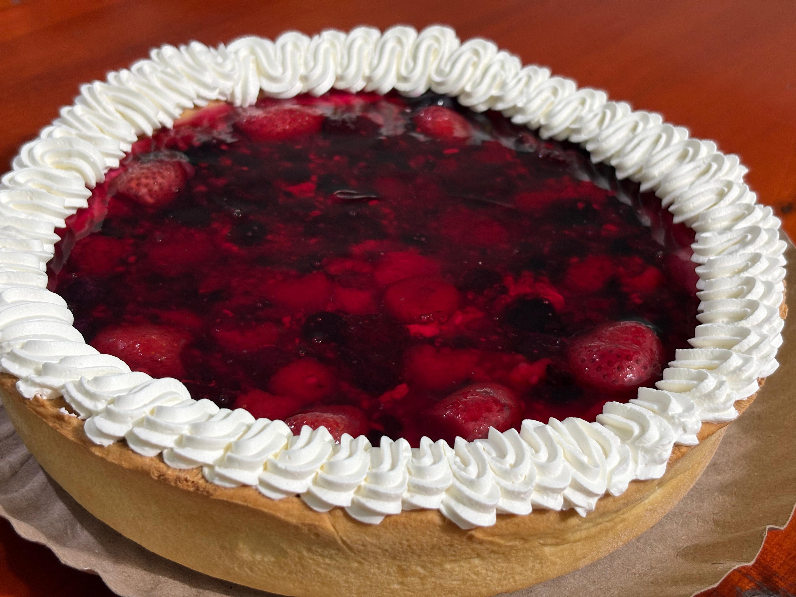
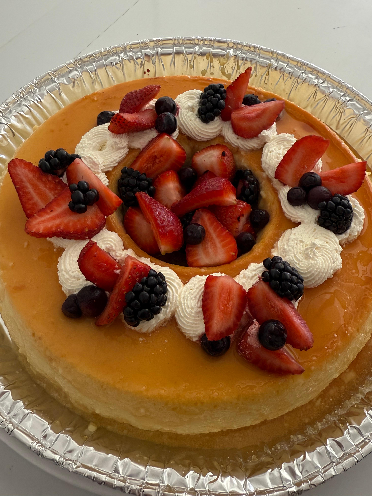
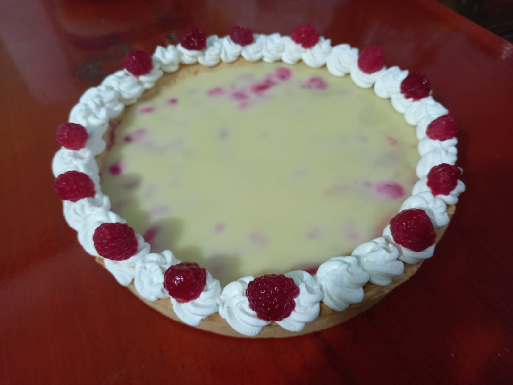
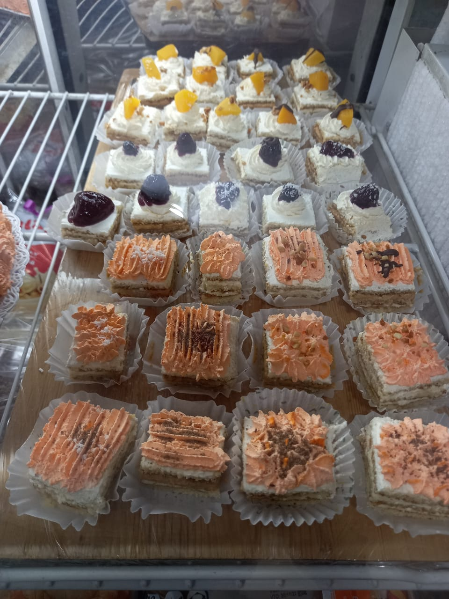
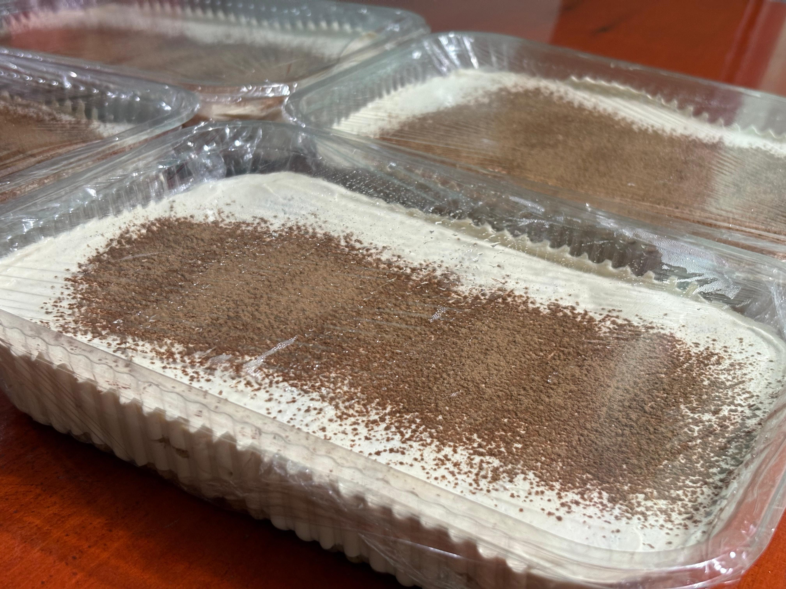
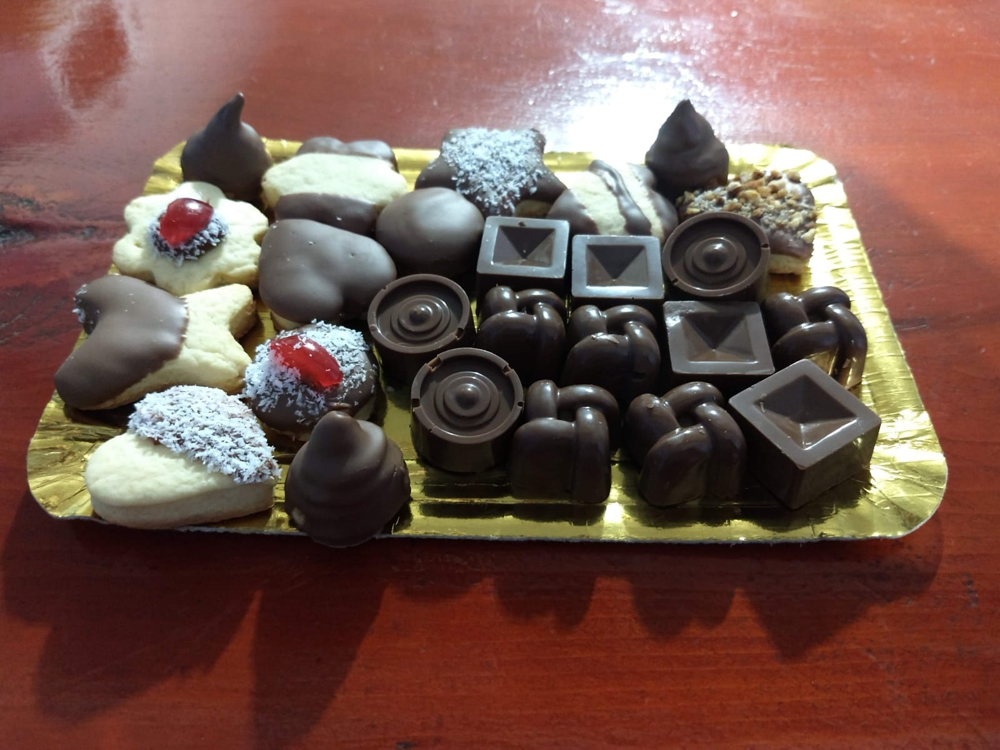

Dulce
Tartas de frutas

Tartas de frutas frescas y deliciosas, perfectas para cualquier ocasión. Hechas con amor y dedicación para que disfrutes cada bocado.
Tarta de frutilla

La combinación perfecta de frutillas frescas y masa crujiente. Nuestra tarta de frutilla es ideal para reuniones familiares, cumpleaños o simplemente para darte un gusto!
Tarta de frutos rojos
Ideal para acompañar una merienda, una celebración o simplemente para darse un gusto especial. Un postre que resalta por su frescura y su sabor frutal inconfundible.
Tarta de durazno

La tarta de durazno perfecta para aquellos que aman la fruta fresca y la textura crujiente. ¡Un verdadero placer para cualquier momento del día!
Tarta de ananá

La tarta de ananá perfecta para sorprender a tus seres queridos. ¡Un verdadero placer para compartir!
Cheesecake
Cheesecake con frutos rojos irresistible: sabores y texturas que te harán agua la boca.
Tarta Franuí
Nuestra tarta franuí, ¡una delicia irresistible! suave crema, frambuesas frescos y la combinación perfecta de texturas que conquistan desde el primer bocado. Además, podés elegirla también en su versión con chocolate negro.
Cupcakes
Foto no disponible
Esponjosos, irresistibles y con el sabor justo para endulzar tu día. Disponibles en dos clásicos infalibles: Vainilla y chocolate.
Mini postres en vasitos
Foto no disponible
Porciones individuales llenas de sabor. Probá nuestras versiones de chocotorta, oreo, tiramisú y cheesecake, ideales para darte un gusto en cualquier momento.
Alfajores
Foto no disponible en este momento
Un clásico irresistible de la pastelería. Suaves, delicados y con ese sabor único que los convierte en el acompañamiento perfecto para un café, un mate o una merienda especial.
Postrecitos
Bocados dulces y suaves que conquistan desde el primer momento. Una propuesta deliciosa que nunca pasa desapercibida.
Tiramisú
Un clásico internacional que se adapta a cualquier momento, desde una merienda hasta una celebración.
Masitas secas
Un clásico de la pastelería que nunca pasa de moda. Deliciosas, crocantes y variadas, ideales para acompañar un buen café, una merienda en familia o simplemente para darse un gusto en cualquier momento del día.
Mesa dulce

La opción perfecta para cualquier evento. Una selección variada de mini postres, tartas, cupcakes y delicias para todos los gustos. Podés personalizarla a tu medida y elegir los sabores que más te gusten. Para más información o reservas, mandanos un mensaje